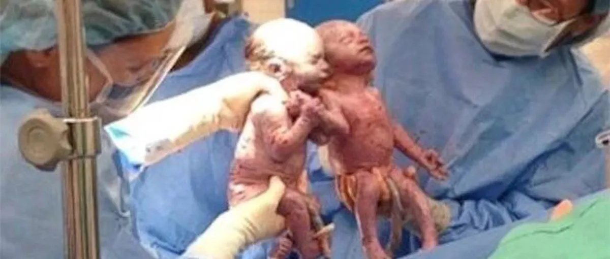
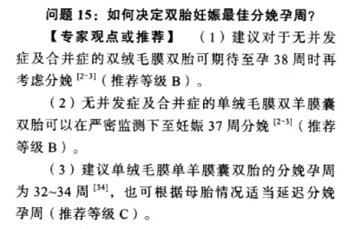

文|圆圈妈
网图|侵删
最近，双胞胎社群喜报不断，出生的双胞胎宝宝们胎龄和体重都特别棒，彻底颠覆了我对双胞胎大多都会早产的认知。
每次报喜都是一股正能量，振奋人心，激励着每一位怀着双胎的姑娘们坚持，坚持，再坚持！
想当年，每次产检我都会抓住医生求真相：“双胞胎都会早产吗？什么孕周生下来孩子才能活？”
如我一样囧的还有一大群小白准父母们，刚入群时，大都一脸惶恐，满脑子问号：“双胞胎一般几周出生？都是早产吗？提前多久？”
孕后期的准妈妈们则大倒苦水，医生建议让提前剖，可是又觉得不甘心，想继续熬，但又怕呆在肚子里太危险，无比纠结！
偶尔还有一些牛妈级别的人物，已经熬到37周38周，甚至39周了，还私信咨询：“俩娃还不肯出来，没动静，咋整？”
到底双胞胎要多少周出生才合适呢？
《双胎妊娠临床处理指南（第一部分）-双胎妊娠的孕期监护和处理》提到双胎最佳分娩孕周。
无并发症及合并症的前提下，双胎妊娠最佳分娩孕周双绒双羊38周，单绒双羊37周，单绒单羊34周。
可实际上呢?真的如此吗？我有点怀疑！
据双胞胎孕育群报喜信息的不完全统计：单绒双羊熬到37+的大有人在，双绒双羊熬到38+也比比皆是，单绒单羊的熬到34+也不胜枚举。
这是群里一热心宝妈@嘻哈统计收集到的部分孕周数据，晒出来给大家参考哈！
【进群后收集到的有孕周的报喜信息 供参考】
★★★★★★★
双绒双羊，36周整剖，姐姐5.4弟弟6.2
双绒双羊，37周，剖2男宝，一个6斤多一点，一个5.5斤！母婴同室。
单绒双羊。孕35+6破羊水剖腹产二女，体重都是4.8斤，母婴同室
单绒双羊，36周剖双男 中午出生 5.3和5.6 母婴同室
双绒双羊，37+4剖龙凤，姐姐5.2斤，同室；弟弟4.2斤，目前观察。
单绒双羊，34周，顺产，姐姐4.3斤，妹妹4.1斤，目前观察。
单绒单羊，34周整剖双女，4.2斤+3.5斤，母女平安。
双绒双羊，37周剖两女，均4.8。新生儿观察室
双绒双羊，36+4剖龙凤均4.4斤，新生儿观察
双绒双羊，37周剖龙凤胎，女儿5斤+母婴同室，儿子4斤+新生儿科
双绒双羊，37周整剖两男，哥哥5.9斤弟弟6.1斤，母婴同室
双绒双羊，36+4剖双男，体重哥哥5.7斤弟弟5斤，评分10分。新生儿科观察了一天，目前母婴同室。
单绒双羊，35+6刨两男，均4斤，母婴同室。
单绒双羊，37周整，两子。顺5.4 ，剖5.6
双绒双羊，剖两女，一个5.8，一个5斤
双绒双羊，剖龙凤，大宝男5.4斤，母婴同室，二宝女4.2斤，体重有点轻，送去医生观察
双绒双羊，38周剖龙凤，大男娃7.4斤小女娃5.22斤，母婴同室
单绒双羊，36+4剖双女，老大4老二4.3，母婴同室
双绒双羊，38+1剖龙凤，哥哥5.6妹妹5.1，母婴同室
单绒双羊，36+2剖双女，4.7+4.8 不用住保温箱
双绒双羊，37周+3剖双女，老大4.8斤，老二5.2斤，母婴同室
双绒双羊，36+3剖龙凤，哥哥4.9妹妹4.6，母婴同室。
双绒双羊，37周刨双女，姐姐5.7妹妹5.4母婴同室
双绒双羊，34+5剖龙凤，姐姐4.9弟弟5.6，新生儿科
单绒双羊，37+1两个公子，大宝7.2，母婴同室，小宝4.6，新生儿科观察
双绒双羊，37+3顺产两千金，均5.1斤母婴同室
双绒双羊，38+1剖双子，大宝5.9小宝6.1，母婴同室
双绒双羊，34+5剖双男，4.2和4.8，母婴同室
双绒双羊，37+1剖龙凤，姐姐6斤弟弟6.1斤，母婴同室
单绒双羊，双输加受限3型，31周剖大宝4.04斤小宝3.06斤，男婴。【单绒不要想着熬孕周，抱在手里才是自己的】
单绒双羊，36+2剖两女宝，4.1斤+3.8斤在新生儿科
单绒双羊，36+2剖两女宝，姐姐4.3斤妹妹4.5斤母婴同室
双绒双羊，37+1剖孖女，姐姐4斤妹妹4.2目前保温箱观察
单绒双羊36+6剖两宝，4.8（同室）+4.4（新生儿观察）
双绒双羊，37+2剖双子，大宝5.8斤小宝5.5斤，母婴同室，经历大出血，要输血。
单绒双羊，30+3顺两女，2.6+2.7斤（突然破水）目前新生儿科
单绒双羊，受限三型32+3剖两宝，2.8+3.6斤，目前新生儿科
单绒双羊，32+4剖双男，都是3.6斤，保温箱情况稳定
双绒双羊，36+2（羊水破）剖两鹅子，分别4.4，4.8，新生儿观察
双绒双羊，30周（羊水破）剖两女，2.7斤+2.5斤，新生儿观察
单绒双羊，37+5剖，两个崽崽分别6.5和5.6
单绒双羊，33周剖2女孩，2.6斤+3.9斤，新生儿科观察。
双绒双羊，38周顺两女，5.6+6.1斤，母婴同室
双绒双羊，37+4剖龙凤，哥哥5.5+妹妹5.9，母婴同室
单绒双羊，33+3剖2女，3.9和4.2斤，新生儿观察
双绒双羊，37+2剖2男 ，5.04斤，母婴同室。
单绒双羊，35周剖两男，老大4.6斤，老二4.4斤。保温箱观察中。
双绒双羊，37周剖两男，老大5.2斤，老二5斤，母婴同室
双绒双羊，36＋2剖龙凤，姐姐4.7斤+弟弟4.6斤，均在婴儿室，我自己发烧，无法同室。
单绒双羊，36+4剖两女，4.6和5斤，母婴同室！
单绒双羊，36+3剖双子，哥哥5.2斤，弟弟5斤，母婴同室
双绒双羊，36+5剖龙凤，哥哥妹妹都4.5斤，母婴同室
单绒双羊，37周剖双子，母婴同室。5.2+5.6斤
单绒双羊，37＋5剖双女，4.9+5.2，母婴同室
单绒双羊，36+3剖双女，5.1斤+4.3斤在新生儿科观察
单绒双羊，35+5剖双男，体重6.6+5.7。送新生儿科观察了
单绒双羊，35+2（突然破水）急诊剖双子，4.2+3.6，目前哥哥普通观察，弟弟保温箱
双绒双羊，37周+1剖龙凤，姐姐5.1+弟弟5.4，母婴同室
单绒双羊，33+5顺两女，4.4+3.9，保温箱
单绒双羊，35+3（破水）剖俩女，4.3+3.7，
母婴同室
双绒双羊，37周剖双女，5.3+5.9斤。母婴同室
单绒双羊，35+5（破水）剖两女，5.1+4.5，新生儿科观察
单绒双羊，36+3剖双子，4.5斤和5.4斤
单绒双羊，35周剖两子，哥哥4.3+弟弟4.7斤
单绒双羊，31+6剖俩子，3.7+4斤，目前新生儿科，阿氏评分9.10.10
单绒双羊，37+2剖双子，5.4+4.4 母婴同室
单绒单羊，34周剖双子，接近4斤，观察ing
双绒双羊，38➕3天剖龙凤，哥哥6.2斤，妹妹5.6斤，母婴同室
双绒双羊，37+4剖龙凤，姐姐4.6斤，哥哥4.8斤，母婴同室
双绒双羊，28周+6（B超小宝脐带血流中断）紧急剖双女，2斤+1.7斤
双绒双羊，37+2剖两千金，5.8+5.9斤，母婴同室
双绒双羊，38w剖双子，5斤均两兄弟，母婴同室
双绒双羊，36剖两女，5+4.5斤，儿科观察
单绒双羊，35+4剖双子，5.04+4.86斤
单绒双羊，34+1剖双子，4.4+2.5斤，新生儿科
单绒双羊，36周剖双子，3.9+3.4斤，新生儿科观察
双绒双羊，37+1天剖双女，5.5+4.8斤，母婴同室
双绒双羊，38W+1剖两子，哥哥7斤，弟弟6斤，母婴同室。整个孕期重了38斤
双绒双羊，38周剖2子，哥哥6.2+弟弟4.8，母婴同室
双绒双羊，32+4（突然破水）刨龙凤，女孩3.3斤+男孩4斤，目前在保温箱
单绒双羊，32+4紧急剖两儿，3.8+3斤，重症监护室
双绒双羊，35+6剖双女，都是4.6斤，母女同室
双绒双羊，37+2（见红）剖，近5斤+4斤半，母婴同室
单绒双羊，36+4剖双子，5+5.2斤，母婴同室
双绒双羊，37+3剖男宝，5.9+5斤，母婴同室
单绒双羊，36+4剖双女，4.3+4.1斤，新生儿科观察
双绒双羊，剖龙凤，5.1+4.6斤，母婴同室
双绒双羊，37+2剖男宝，5+4.8斤，母婴同室
双绒双羊，剖双女，5.4+5.2斤，母婴同室
双绒双羊，剖腹龙凤，哥哥5.8+妹妹4.36斤，母婴同室
单绒双羊，35周剖双子（破水），4.6+4.3斤，新生儿室观察
单绒双羊，36周剖双子，5+5.1斤，母婴同室
单绒双羊，37周剖双女，4.3+4.4斤，新生儿科观察
单绒双羊，36+1剖双女，4.9+4.8斤，新生儿科观察
双绒双羊，36+3剖双女（因D2高），3.8+4.9斤，保温箱
单绒双羊，37+1剖双子，4.8+5.6斤，我血糖高，宝宝出生血糖低些，抱去新生儿科观察三四天。
单绒单羊，37+1 剖双女，5.2+5.16斤，母婴同室
单绒双羊，35周剖双子，4..6+3.8斤，新生儿科观察
双绒双羊，37+4剖千金，6.2+6.1斤，母婴同室
单绒双羊，37+4剖两女，5.4+5斤，母婴同室
双绒双羊，37周剖双男，5.3+4.8，母婴同室
双绒双羊，37+5剖双子，6+4斤，母婴同室
双绒双羊，36+1剖雙女，4.6+4.3斤，母嬰同室
单绒双羊，37+1剖双子，4.4+4.9斤，新生儿科
单绒双羊，35+6刨双女，3.6+3.7斤，新生儿科
双绒双羊，36+2剖双子，5.2+4.7斤，母婴同室
（整孕期重了22斤，因总胆汁酸高所以剖）
双绒双羊，35周剖双子，4.4+5斤，新生儿科（突然开宫口 5指，顺转剖，历经13小时）
单绒双羊，36+6剖双男，5.9+5.3斤，母婴同室（整孕期重了30斤，突然破水，b超估重不到5斤）
双绒双羊，36+3剖双女，均4.48斤，保温箱。（突发子痫，大出血，抢救了一天）
单绒双羊，36+2剖双女，都是4.1斤，母婴同室
单绒双羊，34+5剖双男，4.4+4.1，保温箱观察
双绒双羊，36+1剖双女，4.7+4.8斤，母婴同室
单绒双羊，37剖两女，4.9+4.1斤，评分都是10分，暂新生儿科观察
双绒双羊，37周剖双女，都五斤，母婴同室
双绒双羊，34+2剖双女，4.3+4斤，新生儿科观察。（突然破水）
单绒双羊，36剖双女，4.2+4.1斤，暖箱观察中
单绒双羊37+1剖双子，4.96+4.6斤，母婴同室
双绒双羊，33W（突然破水）剖龙凤，3.9+3.8斤，保温箱
单绒双羊，37周剖双女，3.88+5.18斤，一暖箱，一新生儿科（生长受限一型）
双绒双羊，33+2剖双男，4.5+3.74斤，均在新生儿科，能自主呼吸没有上呼吸机（高血压并发症引发子癫）
单绒双羊，37周剖双女，各五斤，母婴同室
单绒双羊，37周剖双女，都是4.6斤，母婴同室
双绒双羊，37周剖俩女，5.1+5.3斤，母婴同室
双绒双羊，顺产35+4龙凤，女儿2.15儿子1.79，女儿很好 儿子新生儿科（突开宫口）
双绒双羊，38+3剖双子，6斤+4.5斤（弟弟在新生兒科觀察，沒有住保溫箱）
单绒双羊，37+3顺产双女，姐姐差40g五斤，妹妹五斤整，妹妹母婴同室，姐姐新生儿观察（轻微撕裂，并且出了1000ml血）
单绒双羊，35+4剖双男，4.92+5.4斤，新生儿科观察
单绒双羊，33+5剖双子，4.2+4,6斤，大夫说呼吸心脏都还不错，目前在新生儿科（胎监发现宫内窘迫）
双绒双羊，37+6剖俩儿子，4.65+4.63斤，母婴同室并亲喂
双绒双羊，28+5剖龙凤，2.4+2.2斤，新生儿保温箱（破水+打地米后宫缩厉害，宫口开了。急诊剖）
双绒双羊，36+1剖双女，4.5+4斤，新生儿科观察
双绒双羊，35+5剖双子，6.3+6.1斤，母婴同室（自己只增重26斤，因为胎位不正 老大把老二压到宫颈口开二指后 剖）
单绒双羊，35+4剖俩女，4.5+4.8斤，新生儿科观察（凌晨破水）
单绒双羊，36周剖双子，5.2+4.8斤，母婴同室
单绒双羊， 38+3剖双女，6+5.8斤，母婴同室（孕期增重50斤，因规律宫缩剖）
双绒双羊，37+2剖龙凤，姐姐5.3+弟弟6.4斤，自己重了30斤，母婴同室
单绒双羊，33+4剖双女，4.1+5.4，目前在新生儿科（孕期重了40多斤， 因选择性生长受限决定剖了）
单绒双羊，36+6剖双男，6+6.28斤，母婴同室。（自己重了40多斤）
单绒双羊，37周剖双女，5.2+4.1斤，母婴同室
双绒双羊，37+4剖双女，4.7和 4.8斤
单绒双羊，37周剖双子，4.6+5.2斤
双绒双羊，37周+1剖龙凤，5.4+6.2斤，母婴同室（36周一切指标都正常，37周产检血压飙高，医生就扣下我剖了）
单绒双羊，36+5剖双子，4.1斤+5斤，大宝母婴同室，小宝在儿科保温箱（妈妈血小板低+胆汁酸高）
双绒双羊，38周剖双子，4.4+5.3斤，老大新生儿科，老二母婴同室
单绒双羊，36+3剖双子，4.0斤+4.6斤，新生儿科
双绒双羊，38+剖龙凤，6.2+5.7斤，母婴同室
双绒双羊，35+4剖，3.3+4.1斤，新生儿室观察
双绒双羊，38顺双女，5.6+6.12斤，母婴同室
单绒双羊，37+5顺双男，5.8+5.6，母婴同室
双绒双羊，37+4剖双子，5.1斤+5斤，母婴同室
双绒双羊，35+1剖龙凤，4.68斤+5斤
双绒双羊，37+5剖双男，5.7+5.3，母婴同室
双绒双羊，37+4剖双男，5.6+5.6，母婴同室
双绒双羊，38+6剖2公主，5.4+5斤，母婴同室（整孕期重了20斤）
双绒双羊，34+2剖双子，4.16斤+4.76斤，新生儿观察。
单绒双羊，36+5剖双子，5.6斤+4.6斤，送新生儿科观察
单绒双羊，35周剖双男，4.78+4.6，新生儿科8天。（因胆汁酸高被剖）
单绒双羊，35周剖双子，4.2+4斤，均进保温箱10天，弟弟呼吸机三天。(规律宫缩宫口开一指后保胎一周最终因脑中动脉SD值不合格被剖)
每一组数据的背后都有一段故事，一段想起来就有点后怕，可是又无比怀念的双胎孕育故事。
而这只是不完全统计，冰山一角，还有更多双胞胎妈妈超励志的孕育经历，等着我们去舔屏。
建群之初，双胞胎爸爸群曾有一位宝爸提议，希望能收集到一些数据，统计出双胞胎真实的出生孕周。
其实这也是我开公众号建群后一直想做的事情，我一直欠自己一个解释，也许35周不是我的极限，若有前辈的正能量鼓励和正确的保胎方式，也许我还能熬到37周，甚至更久？
为此，孖仔帮发起了这次线上活动，主题是你家双胞胎几周出生？
诚挚邀请双胞胎妈妈爸爸在留言区晒出双胞胎的出生孕周情况。
如圆圈妈妈家的情况（温馨提示：宝妈的身高年龄若涉及隐私，可不写出来）
身高160cm，27岁，孕期增重47斤，单绒双羊，35周+5，剖腹产双子，体重5.2斤/5.3斤，新生儿科观察。
我想，没有任何漂亮的安慰话比这些真实数据更加鼓舞人心！
本次分享活动的意义是，统计双胞胎的出生孕周，给后来人一个参考，一点提示，用真实的数据鼓励那些怀上双胞胎的小白准妈妈们，莫慌，莫急，莫怕，有前辈们的榜样在此，认真怀孕就对了！
因公众号留言精选数量有限，大家也可以扫描下方二维码，填写问卷调查。
圆圈妈会不定期把双胞胎出生孕周数据收集整理发布在公众号上，给那些迷茫无助的新手双胞胎父母们一个方向，一个目标，一点信心，一份鼓励！敬请留意公众号每周的推文更新哈！
为感谢宝爸宝妈的热情参与，此次活动特地设置了抽奖环节，留言点赞数最高者和问卷调查序号是98号的，均可获得价值199元的香港海马牌记忆枕儿童枕一对（截止至3月31日）
欢迎各位双胞胎爸爸妈妈们踊跃参与哈！
-END-
今日互动话题
#你家双胞胎的出生孕周#
评论区聊一聊呗！
微信公众号：孖仔帮
ID : twinsbang
专注双胞胎孕育，养育，教育经验分享
@www.sgguy.com
扫码关注我们
我知道你在看哟

